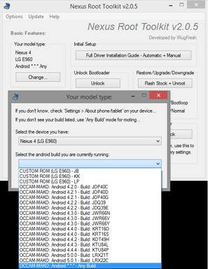

{kind=link}
Es inusual escribir en inglés, pero en esta ocasión he preferido hacerlo
así para ampliar el público objetivo :
{kind=link}
First of all, **What do you need to
start?**
1 . **Have USB Driver
installed** in your system [ I supposed you have Windows]
2
. **Enable
USB Debbugin Options** ( press 7 times in build info into Settings Menu
)
3 . Need have Bootloader unlocked, if you don’t, please check out
this link.
Now you are ready to reborn your old Nexus Smartphone, get rooting o
install custom recovery tool.
I would like to get rooting into my Nexus 4, because some security tool
need have to access root to works well. And time ago I wrote this post
about it “root or not?” ([check out this
link](http://www.seguridadparatodos.es/2013/08/seguridad-moviles-root-or-not.html)
- in spanish only).
[ Get Root ]
Before start, is interesting what you make a backup to be protected if
something go wrong!
1. Need have battery more than 70%
- Download [Wug’s Nexus Root Toolkit
v2.0.](http://www.wugfresh.com/nrt/)5.
If you meet with requirements, you can start now:
Steps:
**
**
{kind=link}
1. Restart your smartphone into Bootloader, you can do this keep hold
VOL Down + Power button during start the phone.
2. Run Nexus Root Toolkit, select your model type (in my case Choose
OCCAM-MAKO Android 5.0.1 - Build LRX22C)
3. Plug the usb of smartphone into your windows system
4. Press Root Button with Donwload custom loader and recovery.
5. Wait to software detect your device
{kind=link}
If all goes well, Nexus Root Toolkit will do all for you, fisrt of all
install a boot with root files, then restart your smartphone to insert a
root file system and install a custom recovery too. All is automatic,
when all finish you must have your phone rooted.
{kind=link}
Now, I want to reborn my Nexus 4 and I have First of All WIPE all data
and formating the smartphone, erase all data include operating system.
Then smartphone can’t start before I install a nwe operating system. !!
Becareful if you formating all data even system ¡¡
[ Restore Nexus 4 ]
You can used Nexus Root Toolkit for restore you Nexus, you have to
install a official Google ROM, the process is:
Steps to Restore phone:
1. Restart smartphone with Bootloader,
You must Press Hold VOL down + Power button to obtain access.
2. Run Nexus Root Toolkit,
Select Device: Choose OCCAM-MAKO Android 5.0.1 - Build LRX22C
3. Plug the USB of smartphone into the windows system
4. Press Restore/Upgrade/Downgrade button (next image)
{kind=link}
Software donwload automatically from Internet ROM and install into you
mobile, !! It’s important choose correct device ¡¡¡ and this tool is
only for Google Nexus 4 (Mako).
{kind=link}
[ Custom ROM ]
Now that you have rooted your phone and custom recovery , these two
requirements, you can install custom ROM.
Install new ROM it’s easy, only you can save the custom file rom
downloaded into internal smartphone storage and restart into recovery
mode, then you have install “zip” and reboot when all it’s end.
Example:
 Direct Download: cm-11-20141115-SNAPSHOT-M12-mako.zip Direct Download: cm-11-20141115-SNAPSHOT-M12-mako.zipmd5sum: 926e5115a2ec71fd3a01e1390686f5cd Short URL: http://get.cm/get/ldZ |
224.75 MB |
Note: You must enabled again “USB Debbuging options” once you had
installed a new ROM, even if new ROM haven’t root access, you must do
the “root process” again.
I recommend install AFWall+ (Android Firewall based on IPtables) so
you can control the network traffic flow in your device and help you to
protect you against any authorized connection.
#ST2Labs
#Nexus4
#Android
#Security